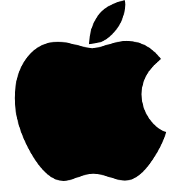

História do Macoste da Apple
O que leva milhares de americanos a formarem longas filas em frente às lojas para comprar um smartphone? Qual a fórmula mágica para ser uma das empresas de tecnologia mais respeitadas de todo o mundo? Conheça um pouco sobre a história da Apple, marca responsável por produtos inovadores e que enlouquecem uma legião de fãs a cada lançamento. Quem diria que dois garotos hippies da Califórnia realizariam o sonho de levar o computador – uma ferramenta, até então, desconhecida de muita gente – para dentro das casas de todo o mundo? Pois bem, é assim que começa a história da maçã.
Criadores
Em 1976, Steve Jobs (Saiba quem é Steve Jobs neste artigo.) e Steve Wozniak, dois jovens apaixonados por inovação, faziam parte de um grupo que montava seus próprios computadores de forma bastante artesanal. Foi em um dormitório de faculdade que a Apple Computers Inc. surgiu, trazendo à tona o Apple I, projeto de um computador bastante avançado para a época, mas que foi recusado por empresas já consolidadas, como a Atari e a HP.
Embora não tenha sido um grande sucesso de vendas, o Apple I, que era apenas a placa de circuito e custava cerca de 600 dólares (o que hoje equivale a 5000 dólares), foi um bom começo e deixou os rapazes esperançosos. A placa de circuito era geralmente armazenada em uma caixa de madeira, de modo bastante rústico. O que era um sonho hippie, acabou se transformando na maior promessa da tecnologia e, mais que isso, em um culto. Afinal, há quem diga que ao comprar um produto Apple, você não está simplesmente adquirindo um MP3 Player ou um computador, mas sim um estilo de vida